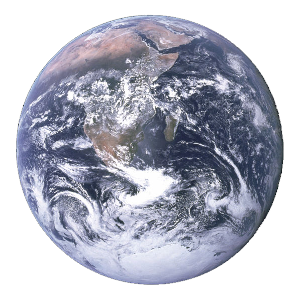

O Planeta Terra
O planeta Terra é o planeta habitado por nós, seres vivos. Conhecido também como planeta água, é o maior dentre os quatro planetas rochosos que fazem parte do Sistema Solar.
O Planeta Terra é um dos planetas que fazem parte do Sistema Solar e é o terceiro planeta mais próximo do Sol. A sua formação ocorreu há 4.5 bilhões de anos. Algumas teorias explicam sua origem, como a teoria da nebulosa solar, ou também conhecida como a teoria do disco protoplanetário.
A Terra vista do espaço. Fonte: NASA/JPL
Idade: Cerca de 4,5 bilhões de anos.
Área da superfície: 510.100.000 km²
Raio: 6.371 km
População: Cerca de 7,5 bilhões.
Satélite Artificial: Lua